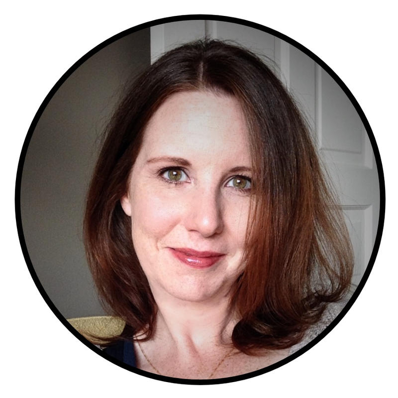
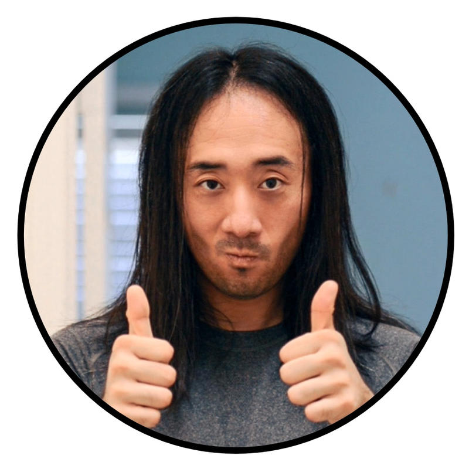
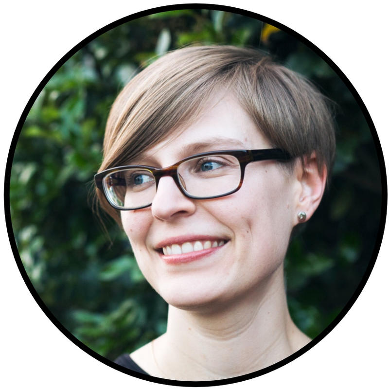
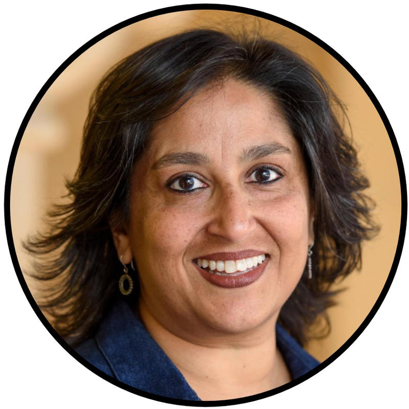
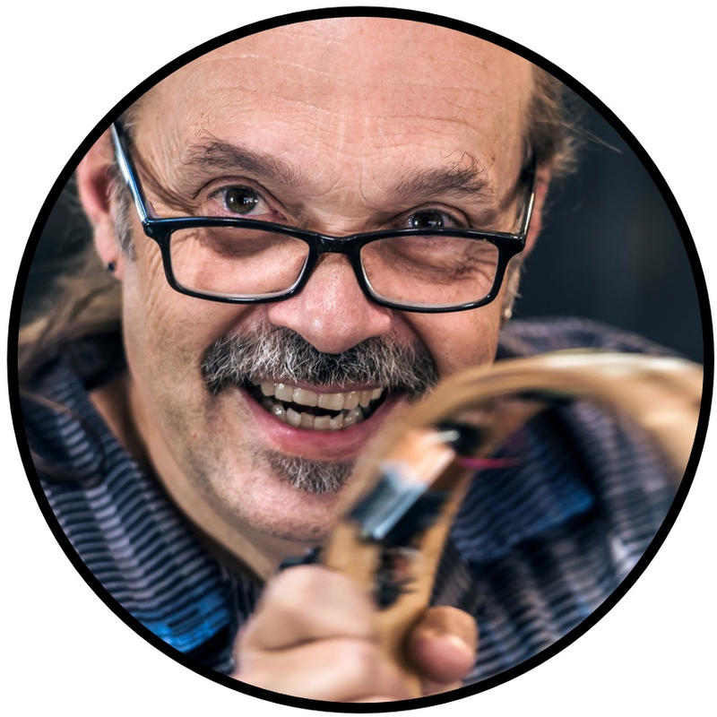
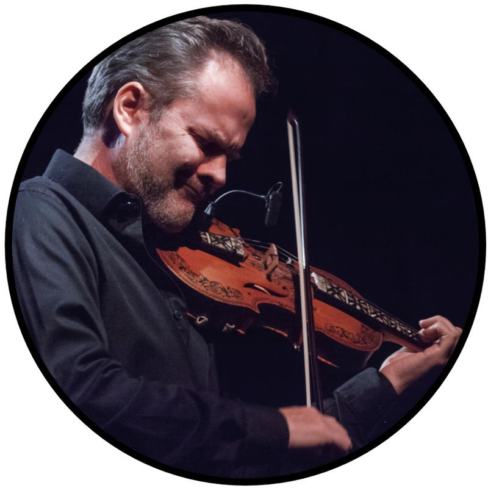
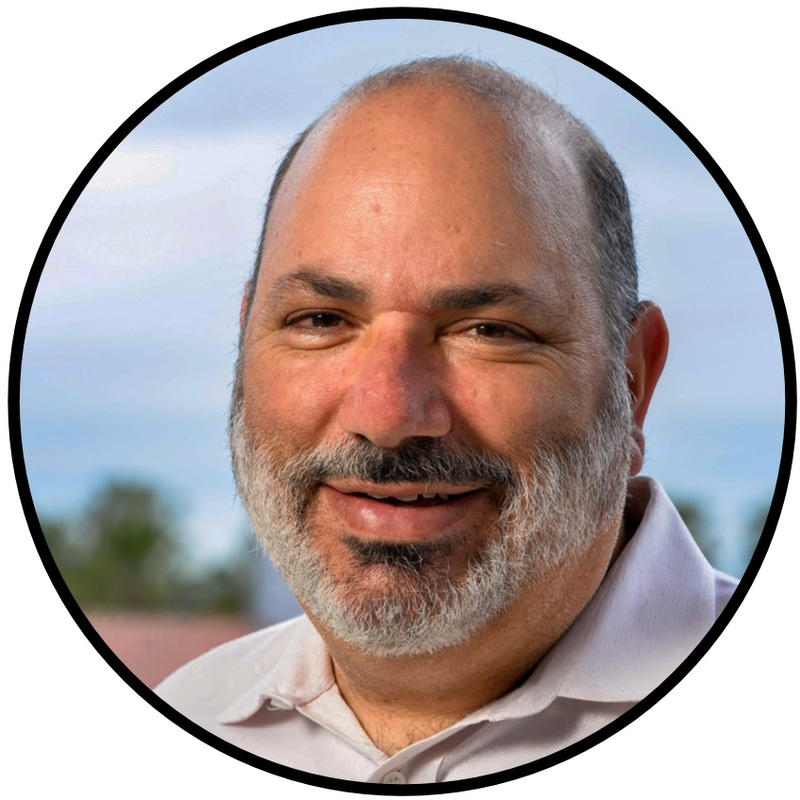
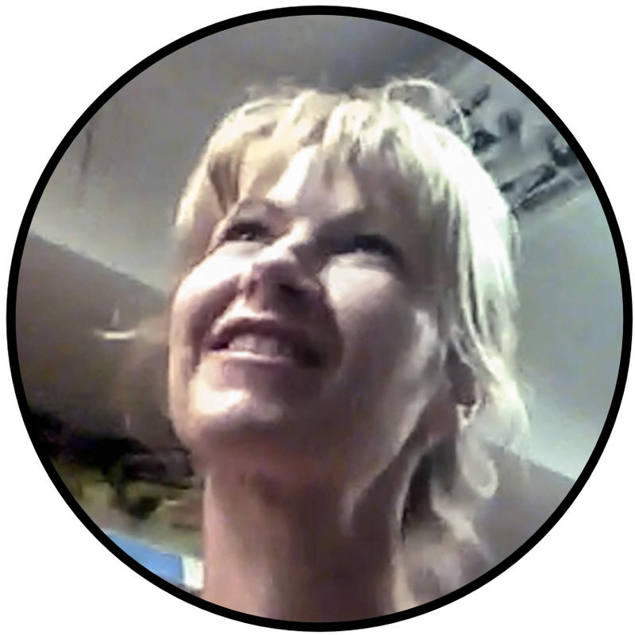
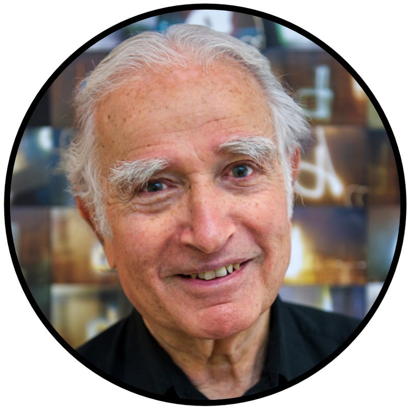
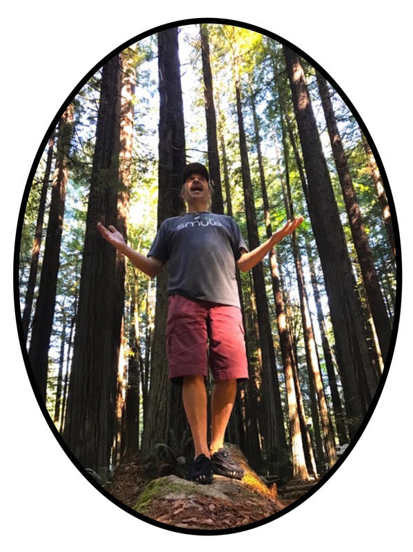

A MANIFESTO + A FESTIVAL = A MANIFESTIVAL
Join us at Stanford University for a festive gathering of talks, performances, and discussion on design — the ethics of design, the craft of design, and the education of design. It begins Thursday (11/1/2018) with a book talk of Artful Design: Technology in Search of the Sublime (a manifesto on how we shape technology, and how technology shapes us) — followed by a celebration, food and drinks, a laptop orchestra concert, and — on Friday (11/2/2018) — a full-day Artful Design Symposium. All events are FREE and OPEN to the public — just RSVP for one or both days. Check out the detailed schedule below for Day 1 | Day 2, and the speakers!
(FULL) DAY 2 RSVP
(FULL) DAY 2 Live Stream
(Thursday, 11/2)

DAY 1: BOOK TALK, CELEBRATION, CONCERT
Thursday • November 1, 2018
Denning House, Stanford University
4:30pm
arrival and check-in
(Wine and M&Ms!)
4:45pm
Book Talk: Artful Design

Opening Remarks
Kate Wahl, Editor-in-Chief, Stanford University Press

Presentation: "Artful Design"
Ge Wang, Author, Associate Professor, Stanford University
•
Q&A and discussion
5:45pm - 6:30pm
Reception & book signing
(There will be cronut holes and dumplings!)
(FULL)
7:30pm @ CCRMA
Laptop Orchestra Concert
Featuring the magnificent Sideband
(RSVP not required for concert)
DAY 2: ARTFUL DESIGN SYMPOSIUM
Friday • November 2, 2018
CCRMA, Stanford University
9am - 9:30am
arrival and check-in; coffee!
9:30am
Welcome & Opening Remarks • Ge Wang
(Host and Moderator)
10am
Session 1: The Ethics of Design
(What does it mean to design ethically?)

"Reflections on Inclusion in Interdisciplinary Computing Teaching and Research" (Tele-Keynote)
Rebecca Fiebrink, machine learning + music + HCI expert (bios)

"What's in a Frame? A Yahoo's View"
Srinija Srinivasan, tech pioneer, trustee, humanist (bios)

"SHTEAMED: Being (and Teaching) Well-rounded Makers"
Perry R. Cook, computer music guru (bios)
noon
Lunch provided @ CCRMA
1pm
Session 2: The Craft of Design
(How do we design well?)

"bitKlavier: A Design Etude" (Keynote)
Dan Trueman, composer, instrument designer, laptop orchestrator (bios)

"Why AI Needs UX Design"
James Landay, human-computer interaction arbiter (bios)

"Re-purposing, Transgression and Aura in Design"
Patricia Alessandrini, composer and sound artist (bios)
2:45pm
Coffee and cronut break!
3pm
Session 3: The Pedagogy of Design
(How do we teach design?)

"Design Education Beyond Content and Process"
Bernie Roth, pioneering researcher of design, kinematics, creativity (bios)
"Design that Understands Us (a new Thinking Matters course)"
Ge Wang, designer and researcher (bios)
•
Panel: Design and Higher Ed"
• Kate Wahl, Editor-in-Chief, Stanford University Press
• Alan Harvey, Director, Stanford University Press
• Jane E, Ph.D. Candidate, Computer Science
• Jack Atherton, Ph.D. Candidate, CCRMA / Music
• Dan Trueman, Professor of Music, Princeton University
4:00pm-5:30pm
Townhall: Ethics, Craft, Pedagogy
(Shaping Technology at the intersection of
Engineering, Art, the Humanities, and Social Sciences)
5:30pm
Reception
(FULL) DAY 2 Live Stream
(Thursday, 11/2)
SPEAKERS
| Rebecca Fiebrink Rebecca is a Senior Lecturer (like an Associate Professor in the USA) at Goldsmiths University of London. She designs new ways to interact with technology in creative practice, and she teaches students studying at the intersection of computer science and the arts. |
|
| Srinija Srinivasan A recovering tech exec, Srinija joined Yahoo! in 1995 as one of their first five employees, where she served as Vice President, Editor-in-Chief until stepping down in 2010. During that time she also chaired the board of non-profit SFJAZZ, and has since co-founded developing music venture Loove to demonstrate how commerce and technology can be guided by artistic values rather than letting our culture be led by market values. She recently concluded participation in the US Partnership on Mobility from Poverty, as well as service on the Commission on Presidential Scholars, appointed in 2010 by President Obama. She serves as a Vice Chair of Stanford University's Board of Trustees and lives bicoastally between Palo Alto and Brooklyn. Srinija is a Stanford Symbolic Systems alum. |
|
|  | Perry Cook Perry attended the University of Missouri at Kansas City Conservatory from 1973-77, studying voice and electronic music, eventually (after being a sound engineer/designer from 1976-1981) getting degrees in Music (1985) and EE (1986), whereafter he went to Stanford CCRMA, getting a PhD in EE in 1990, continuing as Technical Director of CCRMA and also working for NeXT, Media Vision, Chromatic, and Interval Research, but then he joined Princeton University as a Professor of Computer Science, jointly in Music, doing stuff like publishing lots of papers and books, getting a Guggenheim Fellowship in 2003, and co-founding the Princeton laptop Orchestra with Dan Trueman, which received a MacArthur Digital Learning Initiative grant in 2005, then he retired in 2008 to Southern Oregon, mostly to farm sunlight, hang out at Smule, co-found Kadenze, hack ChucK, co-author a book on ChucK, teach some at CalArts, compose and produce music, and try to finish his book on the history of technology and singing. |
| Dan Trueman Dan is a composer, fiddler, and electronic musician. Dan’s collaborators include: So Percussion, fiddler Caoimhín Ó Raghallaigh, guitarist Monica Mugan, the JACK Quartet, singer Iarla Ó Lionáird, bitKlavierist Adam Sliwinski, the PRISM Quartet, poet Paul Muldoon, choreographer Rebecca Lazier, scientist Naomi Leonard, the Princeton Laptop Orchestra (PLOrk, which he co-founded), Sideband, Eighth Blackbird, and others. His work has been recognized by fellowships, grants, commissions, and awards from the Guggenheim Foundation, the Barlow Endowment, the Bessies, the Fulbright Commission, the American Composers Forum, the American Council of Learned Societies, Meet the Composer, among others. He is Professor of Music and Director of the Princeton Sound Kitchen at Princeton University. |
|
| James Landay James is a Professor of Computer Science and the Anand Rajaraman and Venky Harinarayan Professor in the School of Engineering at Stanford University. He specializes in human-computer interaction. He is the founder and co-director of the World Lab, a joint research and educational effort with Tsinghua University in Beijing. His PhD dissertation (CMU, 1996) was the first to demonstrate the use of sketching in user interface design tools. He was named to the ACM SIGCHI Academy in 2011 and as an ACM Fellow in 2017. |
|
| Patricia Alessandrini Patricia is a composer/sound artist creating compositions, installations, and performance situations which are for the most part interactive and intermedial. She performs research on embodied interaction, including instrument design for inclusive performance. She was recently appointed Assistant Professor at Stanford University. |
|
| Bernie Roth Bernie is the Rodney H, Adams professor of Engineering, and a founder and Academic Director of Stanford's d.school. He is a pioneering researcher and teacher in the areas of design, robotics, kinematics and creativity. His latest book, The Achievement Habit, is published by HarperCollins. |
|
| Kate Wahl Kate is the Editor-in-Chief at Stanford University Press. Since joining the Press in 2001, she has edited nearly four hundred titles across a wide range of academic fields and interests, including Middle East studies, race and ethnicity, human rights, U.S. society and politics, anthropology, social aspects of technology, cats, and more. She edited Artful Design. |
|
| Ge Wang (your host) Ge is an Associate Professor at Stanford University, the designer of the ChucK music programming language, director of the Stanford Laptop Orchestra, Co-founder of Smule, designer of Ocarina and Magic Piano for mobile phones, a 2016 Guggenheim Fellow, and the author of Artful Design: Technology in Search of the Sublime, a (comic) book about the craft, aesthetics, and ethics of shaping technology. |
Thank you
Stanford Arts, Denning House, and CCRMA,
for making the Manifestival possible!